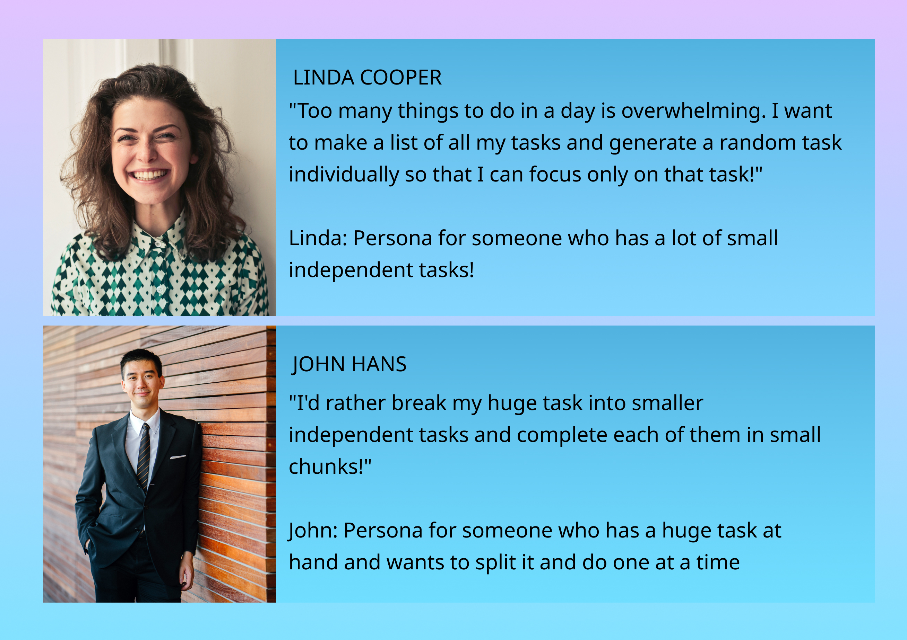

We have often done a lot of multitasking, but at some point of time the tasks overburden and we end
up doing nothing!
I teamed up with a developer to create an App that would help users focus on single task at hand and
move a lot of tasks to closure!
INITIAL BRAINSTORMING AND MARKET RESEARCH
Even while creating this portfolio - there are various aspects to take care of, different pages to create and I would unknowingly spend a lot of time in a very irrelevant task. This is where the App helped! We looked for similar apps in the iOS and Android Market. There was nothing which was simple and straight forward.
USER RESEARCH
I discussed with few multi-taskers and could see that in the end they were practising mindfulness and doing one task at a time. In conclusion there were 2 different and distinct Personas and Onetask was something that everyone needed!
